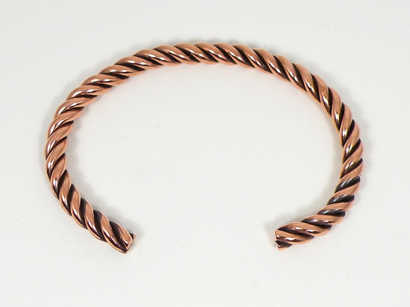
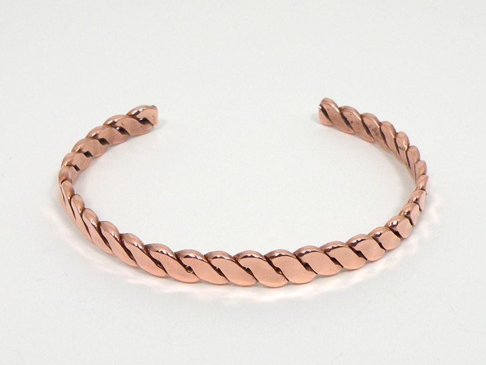

Copper Bangles Copper Bangles
Copper Bangles Copper BanglesAn inflexible, circular piece of jewelry designed to be worn on the wrist is more accurately called a bangle than a bracelet; therefore I deem these interrupted copper rings bangles.
As I have mentioned elsewhere on the website, my introduction to coppersmithing and to jewelry making came from my father, who showed me how to twist scrap copper wire together into bracelets. Many years passed before I learned how to twist the wire with the uniformity you see here. The above bangle is made of three twisted strands of stripped electrical wire. That below is a twisted pair, hammered flat.
While more laborious to shape, a solid rod allows for more creative possibilities than seperate wires. A friend sent me a roughly one-quarter inch rod of copper (probably bronze, actually, which is at least 90% copper) some time ago, which I hammered and twisted into the bangle below.

Created by Sean Corron, April 2, 2011.